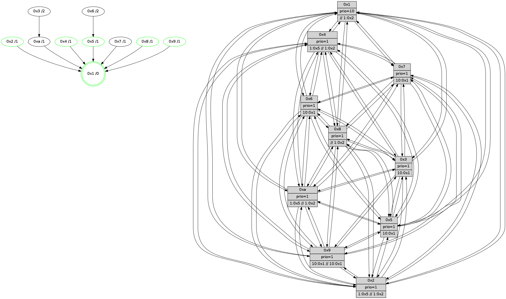

>> << IDX [start] -100 -25 -5 +0 +5 +25 +100 [685.314404011]
 Previous packets
----------------------------------------------------------------------
680.585620 beacon01(faad) #0 coord=01,02,03,04,05,06,07,0a,09,08 cycle=688.0ms assoc
-- color-indic=1 64 d4 9a
680.595603 beacon02(faad) #0 coord=01,02,03,04,05,06,07,0a,09,08 cycle=688.0ms assoc 64 47 ab
680.605602 beacon03(faad) #0 coord=01,02,03,04,05,06,07,0a,09,08 cycle=688.0ms assoc 64 3d e6
680.615603 beacon04(faad) #0 coord=01,02,03,04,05,06,07,0a,09,08 cycle=688.0ms assoc 64 4a 0c
680.625603 beacon05(faad) #0 coord=01,02,03,04,05,06,07,0a,09,08 cycle=688.0ms assoc 64 30 41
680.635605 beacon06(faad) #0 coord=01,02,03,04,05,06,07,0a,09,08 cycle=688.0ms assoc 64 be 96
680.645605 beacon07(faad) #0 coord=01,02,03,04,05,06,07,0a,09,08 cycle=688.0ms assoc 64 c4 db
680.655608 beacon0a(faad) #0 coord=01,02,03,04,05,06,07,0a,09,08 cycle=688.0ms assoc 64 b5 d0
680.665608 beacon09(faad) #0 coord=01,02,03,04,05,06,07,0a,09,08 cycle=688.0ms assoc 64 3b 07
680.675610 beacon08(faad) #0 coord=01,02,03,04,05,06,07,0a,09,08 cycle=688.0ms assoc 64 41 4a
680.688044 [Hello(10): seq=369 sym=6,2,3,8,9,5,7,4,1 sysInfo= stat=6:5,1,4,2/2:7,14,11,1/3:9,0,9,3/8:4,13,1,6/9:10,15,15,4/5:11,7,0,7/7:3,11,1,2/4:3,0,12,6/1:4,5,3,1]
680.690765 [Hello(5): seq=437 sym=7,6,4,3,1,9,8,10,2 sysInfo= stat=7:4,15,5,3/6:1,0,3,6/4:12,8,14,5/3:5,4,12,4/1:5,14,2,1/9:8,11,2,3/8:10,12,13,4/10:15,11,3,5/2:3,5,1,0]
680.693590 [Color(7) seq=89 @0:0 prio=1 >10.@1,1.@2,1.@3,1.@5]
680.695515 [Color(3) seq=101 @0:0 prio=1 >10.@1,1.@2,1.@5,1.@8]
680.697424 [Hello(9): seq=380 sym=5,2,3,4,7,6,8,10,1 sysInfo=hasWarning stat=5:15,2,15,8/2:1,10,7,5/3:12,7,13,6/4:14,1,0,5/7:7,6,6,3/6:14,11,0,5/8:11,1,8,2/10:11,6,4,7/1:2,11,5,1]
680.699909 [Hello(8): seq=380 sym=5,2,3,4,7,6,9,10,1 sysInfo=hasWarning,coloring-mode-on,ColoringModeIndicationCalled stat=5:4,7,4,6/2:11,13,11,1/3:4,1,0,8/4:12,13,4,6/7:4,12,3,5/6:14,2,15,7/9:10,15,4,5/10:15,12,2,6/1:7,6,4,0]
680.703183 [Hello(2): seq=433 sym=4,5,7,6,3,9,8,10,1 sysInfo=hasWarning stat=4:8,10,1,4/5:3,6,0,0/7:10,11,5,3/6:11,3,2,5/3:12,7,13,1/9:6,4,14,1/8:0,4,12,4/10:5,1,15,4/1:3,9,14,1]
680.706315 [Color(2) seq=82 @0:0 prio=1 >1.@5 >>1.@2,1.@3,1.@4]
680.710445 [Color(5) seq=90 @0:0 prio=1 >10.@1,1.@2,1.@3,1.@4]
680.712276 [Color(1) seq=117 @0:0 prio=10 >>1.@2,1.@3,1.@4]
680.720944 [Color(9) seq=85 @0:0 prio=1 >10.@1,1.@2,1.@3,1.@5 >>10.@1,1.@2,1.@3]
----------------------------------------------------------------------
681.373750 beacon01(faad) #0 coord=01,02,03,04,05,06,07,0a,09,08 cycle=688.0ms assoc
-- color-indic=1 64 10 94
681.383732 beacon02(faad) #0 coord=01,02,03,04,05,06,07,0a,09,08 cycle=688.0ms assoc 64 83 a5
681.393732 beacon03(faad) #0 coord=01,02,03,04,05,06,07,0a,09,08 cycle=688.0ms assoc 64 f9 e8
681.403732 beacon04(faad) #0 coord=01,02,03,04,05,06,07,0a,09,08 cycle=688.0ms assoc 64 8e 02
681.413734 beacon05(faad) #0 coord=01,02,03,04,05,06,07,0a,09,08 cycle=688.0ms assoc 64 f4 4f
681.423733 beacon06(faad) #0 coord=01,02,03,04,05,06,07,0a,09,08 cycle=688.0ms assoc 64 7a 98
681.433732 beacon07(faad) #0 coord=01,02,03,04,05,06,07,0a,09,08 cycle=688.0ms assoc 64 00 d5
681.443737 beacon0a(faad) #0 coord=01,02,03,04,05,06,07,0a,09,08 cycle=688.0ms assoc 64 71 de
681.453737 beacon09(faad) #0 coord=01,02,03,04,05,06,07,0a,09,08 cycle=688.0ms assoc 64 ff 09
681.463739 beacon08(faad) #0 coord=01,02,03,04,05,06,07,0a,09,08 cycle=688.0ms assoc 64 85 44
681.474999 [Hello(1): seq=346 sym=4,2,9,5,10,3,8,6,7 sysInfo=coloring-mode-on,ColoringModeRequestCalled stat=4:11,13,4,0/2:5,12,10,8/9:10,2,3,0/5:6,9,2,0/10:10,15,10,7/3:7,11,14,9/8:12,11,14,6/6:10,10,8,6/7:12,13,15,7]
681.477959 [Hello(3): seq=437 sym=1,7,6,2,4,8,9,10,5 sysInfo= stat=1:15,14,4,1/7:0,0,0,0/6:1,9,13,7/2:0,6,2,7/4:12,10,2,4/8:8,0,0,2/9:10,14,6,6/10:15,8,2,5/5:9,4,2,6]
681.480526 [Hello(4): seq=437 sym=5,7,6,2,3,9,8,10,1 sysInfo= stat=5:5,11,1,6/7:3,15,3,2/6:10,5,4,7/2:11,13,15,6/3:3,3,11,4/9:4,4,0,3/8:10,8,3,7/10:13,9,4,6/1:8,12,3,1]
681.485798 [Hello(7): seq=437 sym=2,3,5,6,4,8,9,10,1 sysInfo=hasWarning stat=2:1,8,11,9/3:4,13,5,8/5:2,11,6,10/6:10,8,3,2/4:1,3,1,0/8:8,0,8,4/9:4,5,7,8/10:10,5,9,7/1:15,12,2,1]
681.492227 [Color(8) seq=117 @0:0 prio=1 >>1.@2,1.@3,1.@4]
681.495634 [Hello(6): seq=437 sym=2,3,5,4,7,9,8,10,1 sysInfo= stat=2:7,11,11,6/3:8,12,4,6/5:2,9,2,8/4:8,12,4,0/7:0,1,0,0/9:5,10,4,6/8:0,11,4,5/10:7,7,9,6/1:8,15,15,1]
----------------------------------------------------------------------
682.161882 beacon01(faad) #0 coord=01,02,03,04,05,06,07,0a,09,08 cycle=688.0ms assoc
-- color-indic=1 64 ac 91
682.171864 beacon02(faad) #0 coord=01,02,03,04,05,06,07,0a,09,08 cycle=688.0ms assoc 64 3f a0
682.181865 beacon03(faad) #0 coord=01,02,03,04,05,06,07,0a,09,08 cycle=688.0ms assoc 64 45 ed
682.191864 beacon04(faad) #0 coord=01,02,03,04,05,06,07,0a,09,08 cycle=688.0ms assoc 64 32 07
682.201865 beacon05(faad) #0 coord=01,02,03,04,05,06,07,0a,09,08 cycle=688.0ms assoc 64 48 4a
682.211864 beacon06(faad) #0 coord=01,02,03,04,05,06,07,0a,09,08 cycle=688.0ms assoc 64 c6 9d
682.221865 beacon07(faad) #0 coord=01,02,03,04,05,06,07,0a,09,08 cycle=688.0ms assoc 64 bc d0
682.231871 beacon0a(faad) #0 coord=01,02,03,04,05,06,07,0a,09,08 cycle=688.0ms assoc 64 cd db
682.241870 beacon09(faad) #0 coord=01,02,03,04,05,06,07,0a,09,08 cycle=688.0ms assoc 64 43 0c
682.251873 beacon08(faad) #0 coord=01,02,03,04,05,06,07,0a,09,08 cycle=688.0ms assoc 64 39 41
682.264690 [Hello(8): seq=381 sym=5,2,3,4,7,6,9,10,1 sysInfo=hasWarning,coloring-mode-on,ColoringModeIndicationCalled stat=5:4,8,4,6/2:12,14,11,1/3:4,1,0,8/4:12,13,4,6/7:4,12,3,5/6:15,3,15,7/9:10,0,4,5/10:15,12,2,6/1:8,7,4,0]
682.267416 [Color(7) seq=90 @0:0 prio=1 >10.@1,1.@2,1.@3,1.@5]
682.269329 [Color(6) seq=107 @0:0 prio=1 >10.@1,1.@2,1.@3,1.@5]
682.274388 [Color(1) seq=118 @0:0 prio=10 >>1.@2,1.@3,1.@4]
682.276114 [Color(5) seq=91 @0:0 prio=1 >10.@1,1.@2,1.@3,1.@4]
682.278559 [Hello(2): seq=434 sym=4,5,7,6,3,9,8,10,1 sysInfo=hasWarning stat=4:9,11,1,4/5:3,7,0,0/7:11,11,5,3/6:12,3,2,5/3:13,7,13,1/9:6,5,14,1/8:0,5,12,4/10:6,1,15,4/1:4,10,14,1]
682.281516 [Color(9) seq=86 @0:0 prio=1 >10.@1,1.@2,1.@3,1.@5 >>10.@1,1.@2,1.@3]
682.283635 [Color(2) seq=83 @0:0 prio=1 >1.@5 >>1.@2,1.@3,1.@4]
682.287789 [Color(4) seq=81 @0:0 prio=1 >1.@5 >>1.@2,1.@3,1.@4]
682.290348 [Color(3) seq=102 @0:0 prio=1 >10.@1,1.@2,1.@5,1.@8]
682.293538 [Hello(10): seq=370 sym=6,2,3,8,9,5,7,4,1 sysInfo= stat=6:6,2,4,2/2:8,15,11,1/3:10,1,9,3/8:5,14,1,6/9:11,0,15,4/5:12,8,0,7/7:4,12,1,2/4:4,0,12,6/1:5,6,3,1]
----------------------------------------------------------------------
682.950013 beacon01(faad) #0 coord=01,02,03,04,05,06,07,0a,09,08 cycle=688.0ms assoc
-- color-indic=1 64 98 89
682.959994 beacon02(faad) #0 coord=01,02,03,04,05,06,07,0a,09,08 cycle=688.0ms assoc 64 0b b8
682.969995 beacon03(faad) #0 coord=01,02,03,04,05,06,07,0a,09,08 cycle=688.0ms assoc 64 71 f5
682.979995 beacon04(faad) #0 coord=01,02,03,04,05,06,07,0a,09,08 cycle=688.0ms assoc 64 06 1f
682.989997 beacon05(faad) #0 coord=01,02,03,04,05,06,07,0a,09,08 cycle=688.0ms assoc 64 7c 52
682.999996 beacon06(faad) #0 coord=01,02,03,04,05,06,07,0a,09,08 cycle=688.0ms assoc 64 f2 85
683.009996 beacon07(faad) #0 coord=01,02,03,04,05,06,07,0a,09,08 cycle=688.0ms assoc 64 88 c8
683.020000 beacon0a(faad) #0 coord=01,02,03,04,05,06,07,0a,09,08 cycle=688.0ms assoc 64 f9 c3
683.030000 beacon09(faad) #0 coord=01,02,03,04,05,06,07,0a,09,08 cycle=688.0ms assoc 64 77 14
683.040002 beacon08(faad) #0 coord=01,02,03,04,05,06,07,0a,09,08 cycle=688.0ms assoc 64 0d 59
683.054973 [STC(1) #0.58 tree-change,inconsistent-stability,stable,to-color d=0]
683.056460 [Hello(3): seq=438 sym=1,7,6,2,4,8,9,10,5 sysInfo= stat=1:15,14,4,1/7:1,0,0,0/6:2,9,13,7/2:0,6,2,7/4:13,10,2,4/8:9,1,0,2/9:10,14,6,6/10:0,8,2,5/5:9,4,2,6]
683.064925 [Hello(6): seq=438 sym=2,3,5,4,7,9,8,10,1 sysInfo= stat=2:8,12,11,6/3:8,13,4,6/5:3,10,2,8/4:8,13,4,0/7:0,1,0,0/9:5,11,4,6/8:1,11,4,5/10:8,7,9,6/1:8,0,15,1]
----------------------------------------------------------------------
683.738142 beacon01(faad) #0 coord=01,02,03,04,05,06,07,0a,09,08 cycle=688.0ms assoc
-- color-indic=1 64 24 8c
683.748125 beacon02(faad) #0 coord=01,02,03,04,05,06,07,0a,09,08 cycle=688.0ms assoc 64 b7 bd
683.758124 beacon03(faad) #0 coord=01,02,03,04,05,06,07,0a,09,08 cycle=688.0ms assoc 64 cd f0
683.768126 beacon04(faad) #0 coord=01,02,03,04,05,06,07,0a,09,08 cycle=688.0ms assoc 64 ba 1a
683.778124 beacon05(faad) #0 coord=01,02,03,04,05,06,07,0a,09,08 cycle=688.0ms assoc 64 c0 57
683.788125 beacon06(faad) #0 coord=01,02,03,04,05,06,07,0a,09,08 cycle=688.0ms assoc 64 4e 80
683.798126 beacon07(faad) #0 coord=01,02,03,04,05,06,07,0a,09,08 cycle=688.0ms assoc 64 34 cd
683.808132 beacon0a(faad) #0 coord=01,02,03,04,05,06,07,0a,09,08 cycle=688.0ms assoc 64 45 c6
683.818131 beacon09(faad) #0 coord=01,02,03,04,05,06,07,0a,09,08 cycle=688.0ms assoc 64 cb 11
683.828133 beacon08(faad) #0 coord=01,02,03,04,05,06,07,0a,09,08 cycle=688.0ms assoc 64 b1 5c
683.840821 [Hello(10): seq=371 sym=6,2,3,8,9,5,7,4,1 sysInfo= stat=6:7,2,4,2/2:8,15,11,1/3:11,1,9,3/8:5,14,1,6/9:11,0,15,4/5:12,8,0,7/7:5,12,1,2/4:4,0,12,6/1:5,6,4,1]
683.843552 [Hello(2): seq=435 sym=4,5,7,6,3,9,8,10,1 sysInfo=hasWarning stat=4:9,12,1,4/5:3,7,0,0/7:11,11,5,3/6:13,3,2,5/3:14,8,13,1/9:6,5,14,1/8:1,5,12,4/10:7,1,15,4/1:4,10,15,1]
683.846547 [Hello(5): seq=439 sym=7,6,4,3,1,9,8,10,2 sysInfo= stat=7:5,15,5,3/6:3,0,3,6/4:14,10,14,5/3:6,5,12,4/1:6,15,3,1/9:8,13,2,3/8:11,14,13,4/10:1,11,3,5/2:4,6,1,0]
683.850078 [STC(4)->1 #0.58 tree-change,inconsistent-stability,stable,to-color d=1]
683.851624 [Color(6) seq=108 @0:0 prio=1 >10.@1,1.@2,1.@3,1.@5]
683.853280 [STC(5)->1 #0.58 tree-change,inconsistent-stability,stable,to-color d=1]
683.854730 [Color(4) seq=82 @0:0 prio=1 >1.@5 >>1.@2,1.@3,1.@4]
683.856929 [Hello(8): seq=382 sym=5,2,3,4,7,6,9,10,1 sysInfo=hasWarning,coloring-mode-on,ColoringModeIndicationCalled stat=5:4,9,4,6/2:13,15,11,1/3:4,2,0,8/4:12,14,4,6/7:5,13,3,5/6:0,4,15,7/9:10,1,4,5/10:0,12,2,6/1:8,8,4,0]
683.860085 [STC(2)->1 #0.58 tree-change,inconsistent-stability,stable,to-color d=1]
683.862001 [Color(3) seq=103 @0:0 prio=1 >10.@1,1.@2,1.@5,1.@8]
683.863622 [TreeStatus(2)-.->1 #0.58 tree-change,inconsistent-stability,stable child=1]
683.866092 [Color(2) seq=84 @0:0 prio=1 >1.@5 >>1.@2,1.@3,1.@4]
683.868207 [STC(10)->1 #0.58 tree-change,inconsistent-stability,to-color d=1]
683.869853 [STC(7)->1 #0.58 to-color d=1]
683.872166 [TreeStatus(5)-.->1 #0.58 tree-change,inconsistent-stability,stable child=1]
683.874041 [Hello(9): seq=382 sym=5,2,3,4,7,6,8,10,1 sysInfo=hasWarning stat=5:15,2,15,8/2:1,11,7,5/3:13,8,13,6/4:0,2,0,5/7:8,6,6,3/6:0,11,0,5/8:12,3,8,2/10:13,6,4,7/1:3,11,6,1]
683.877380 [Color(1) seq=119 @0:0 prio=10 >>1.@2,1.@3,1.@4]
683.879110 [STC(9)->1 #0.58 tree-change,inconsistent-stability,stable,to-color d=1]
683.881960 [Color(5) seq=92 @0:0 prio=1 >10.@1,1.@2,1.@3,1.@4]
683.887939 [Color(9) seq=87 @0:0 prio=1 >10.@1,1.@2,1.@3,1.@5 >>10.@1,1.@2,1.@3]
----------------------------------------------------------------------
684.526273 beacon01(faad) #0 coord=01,02,03,04,05,06,07,0a,09,08 cycle=688.0ms assoc
-- color-indic=1 64 e0 82
684.536254 beacon02(faad) #0 coord=01,02,03,04,05,06,07,0a,09,08 cycle=688.0ms assoc 64 73 b3
684.546256 beacon03(faad) #0 coord=01,02,03,04,05,06,07,0a,09,08 cycle=688.0ms assoc 64 09 fe
684.556256 beacon04(faad) #0 coord=01,02,03,04,05,06,07,0a,09,08 cycle=688.0ms assoc 64 7e 14
684.566256 beacon05(faad) #0 coord=01,02,03,04,05,06,07,0a,09,08 cycle=688.0ms assoc 64 04 59
684.576256 beacon06(faad) #0 coord=01,02,03,04,05,06,07,0a,09,08 cycle=688.0ms assoc 64 8a 8e
684.586256 beacon07(faad) #0 coord=01,02,03,04,05,06,07,0a,09,08 cycle=688.0ms assoc 64 f0 c3
684.596262 beacon0a(faad) #0 coord=01,02,03,04,05,06,07,0a,09,08 cycle=688.0ms assoc 64 81 c8
684.606261 beacon09(faad) #0 coord=01,02,03,04,05,06,07,0a,09,08 cycle=688.0ms assoc 64 0f 1f
684.616261 beacon08(faad) #0 coord=01,02,03,04,05,06,07,0a,09,08 cycle=688.0ms assoc 64 75 52
684.627522 [Hello(1): seq=348 sym=4,2,9,5,10,3,8,6,7 sysInfo=coloring-mode-on,ColoringModeRequestCalled stat=4:12,14,4,0/2:6,13,10,8/9:10,4,4,0/5:6,11,2,0/10:12,15,10,7/3:9,12,14,9/8:13,12,14,6/6:12,10,8,6/7:13,13,15,7]
684.631207 [Hello(3): seq=439 sym=1,7,6,2,4,8,9,10,5 sysInfo= stat=1:15,15,4,1/7:1,0,1,0/6:3,9,13,7/2:0,7,2,8/4:13,10,2,4/8:9,1,0,2/9:11,15,7,6/10:1,8,3,5/5:9,5,2,7]
684.634014 [STC(3)->10-.->1 #0.58 tree-change,inconsistent-stability,to-color d=2]
684.635665 [TreeStatus(3)-.->1 #0.58 tree-change,inconsistent-stability child=1]
684.639588 [Hello(7): seq=439 sym=2,3,5,6,4,8,9,10,1 sysInfo=hasWarning stat=2:2,9,11,9/3:5,14,5,8/5:3,13,6,11/6:12,9,3,2/4:1,4,1,0/8:9,1,8,4/9:5,7,8,8/10:11,5,9,7/1:15,14,3,1]
684.643994 [TreeStatus(7)-.->1 #0.58 tree-change,inconsistent-stability child=1]
684.648216 [Hello(6): seq=439 sym=2,3,5,4,7,9,8,10,1 sysInfo= stat=2:8,13,12,7/3:8,14,4,6/5:3,11,3,9/4:8,14,4,0/7:0,1,1,0/9:6,12,5,6/8:2,11,4,5/10:9,7,10,6/1:8,1,15,1]
684.652627 [STC(6)->5-.->1 #0.58 tree-change,inconsistent-stability,to-color d=2]